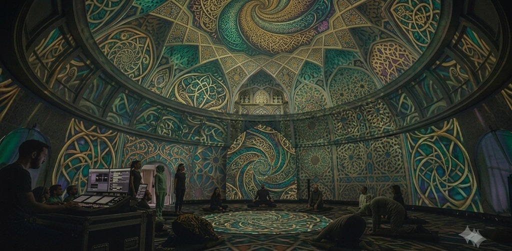

SIMULATION 03 · DYNAMIC FLUID & PARTICLE ORBIT
Fluid Light Circulation Simulation (V2)
Slow laminar light ribbons and particle currents choreographed without sharp flicker for neurodivergent sensory safety.
A zero demand spatial sanctuary engineered for 15 metre fulldomes, combining interactive 3D architectural simulation, sacred geometric architecture, 4 7 8 breath paced light, and enveloping spatial audio for nervous system regulation.

What you see here is an ongoing art research simulation, demo, and prototype, not the final finished exhibition. Every 3D dome model, 4K domemaster test, fluid orbit render, and spatial audio stem on this page documents the iterative research reached so far.
15M FULLDOME SPATIAL R&D Plan: Created to align directly with Mohamed Hossam Elwakil’s art residency at the 15m Fulldome Spatial Sanctuary in Devonport, Plymouth, this R&D establishes the spatial geometry, acoustic pacing, and interactive control systems needed to develop the full live audiovisual immersive performance for TAWAF inside the 15m Fulldome itself.
Inspect the 3D sculptural geometry built in Blender for the 15 metre 15m Fulldome Sanctuary. Drag to orbit, pinch/scroll to zoom, or select a spatial view preset below.
All six Web-optimised simulation renders documenting TAWAF’s 3D structural dome orbit, dynamic fluid visualisers, 4 7 8 breathing domemasters, and Unreal Engine / Blender spatial tests.
Slow laminar light ribbons and particle currents choreographed without sharp flicker for neurodivergent sensory safety.
19 second physiological breathing cadence visualised as warm golden geometric expansion inside a circular fisheye projection.
Counter clockwise rotational sacred symmetry calibrated for full hemispherical dome projection.
Audition the organic psychoacoustic sanctuary mixes and individual spatial acoustic stems alongside an in-browser live 432 Hz / 108 Hz harmonic breath synthesiser.
Real time browser synthesiser generating warm sine harmonics tuned to 108 Hz (Muladhara Ground) + 432 Hz modulated smoothly across a 19 second 4 7 8 calm breath cycle.
TAWAF is an ongoing spatial art and fulldome R&D project designed to transform a 15 metre dome into a calm, restorative sanctuary where neurodivergent and overwhelmed minds can settle without instructions, tasks, or visual noise.
Audiences can recline, sit, or walk slowly beneath an orbital vault of warm geometric light patterns that expand and soften in rhythm with slow breathing, accompanied by grounded acoustic resonance.
Living with ADHD shaped every creative decision in TAWAF. Most contemporary immersive media competes aggressively for attention with bright strobes, loud drops, and crowded visuals that leave neurodivergent visitors exhausted.
TAWAF inverts that logic. Drawing inspiration from the meditative orbital rhythm of Tawaf alongside Moroccan Zellige and Azerbaijani Girih geometry, the dome becomes a quiet shelter where geometry moves at the speed of a calm breath.
Translated personal neurodivergent sensory triggers and regulation needs into a physical four zone sanctuary layout offering reclined deep rest areas, seated contemplation rings, and low stimulus perimeter retreats.

Modelled intricate circular Shabaka lattice vaults and radial geometric shells in Blender and Unreal Engine 5.8 so light filters organically across the entire 180 degree dome hemisphere.

Synchronised orbital geometric expansion to a calm 4 7 8 breath cycle and composed spatialised 432 Hz crystal bowl and acoustic drone stems engineered for circular dome speaker arrays.

Built interactive WebGL 3D dome viewers, domemaster synthesisers, and live performance console mockups to demonstrate breath tempo, colour warmth, and orbital rotation ahead of venue integration.
